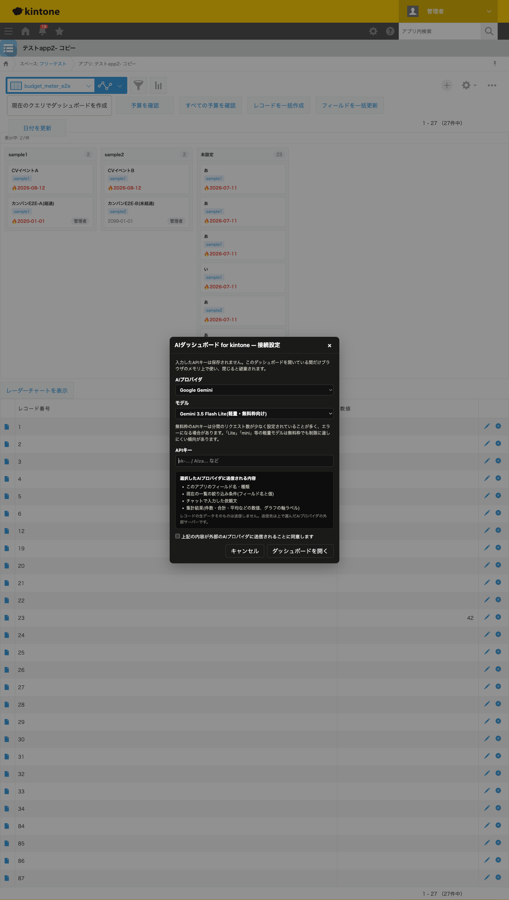

GovAppsプラグイン 安全性を確認できる無料kintoneプラグイン集
レコード一覧画面に「現在のクエリでダッシュボードを作成」ボタンを追加します。押すとモーダルが開き、 左側のチャットでAIに依頼するだけで、今その一覧で絞り込んでいる条件に一致するレコードを対象に、 KPI・棒グラフ・折れ線・円グラフ・表・クロス集計・地図といったダッシュボードを右側に組み立てます。 ダッシュボードはブラウザを閉じると消える一時的なもので、残したい場合はHTMLとしてダウンロードできます。
このプラグインの利用には、ご自身のGemini・OpenAI・Claudeいずれかの外部AI APIキーが必要です (無料枠でも利用できますが、APIキーの発行・管理は各社のサービスに依存します)。 プラグイン自体は無料ですが、選んだAIプロバイダへの通信が発生する点が他のGovAppsプラグインと異なります。 詳しくは下記「セキュリティレビュー結果サマリ」をご確認ください。
一覧画面で「今月」「担当者A」などに絞り込んだ状態でボタンを押し、「案件の状況を一目で把握できるダッシュボードを作って」のように頼むと、AIがステータス別の内訳・金額の推移・担当者別の件数など、性質の異なるウィジェットを組み合わせて自動的に配置します。
棒グラフ・円グラフ・表・クロス集計のセルをクリックすると、その値で絞り込む・時系列の粒度を変える(月別→日別など)といったメニューが出ます。チャットで頼み直さなくても、画面を触るだけでダッシュボードを掘り下げられます。
緯度・経度にあたるフィールド(フィールドコードやラベルに「緯度」「経度」「lat」「lng」等を含むもの)があるアプリでは、AIに頼むと地図ウィジェットも作成できます。地図タイルは国土地理院タイルを使用します。
APIキーはどこにも保存されません。ワークスペースを閉じるたびに、次に使うときは改めて入力が必要です。
kintoneセキュアコーディングガイドラインに沿って実装時にチェックしています。このプラグインは GovAppsの他のプラグインと異なり、機能上、外部(選択したAIプロバイダ)への通信が必須です。 特に重要な点は次のとおりです。
textContentやDOM要素の組み立てのみで描画し、innerHTMLには一切渡していません。AI自身がHTML文字列を組み立てることもありません。pnpm auditで既知の脆弱性が無いことを確認済みです。詳細な確認項目・確認日は下記GitHubのチェックリストに全項目を掲載しています。

プラグイン自体の管理者向け設定画面には入力項目がないため、実際に利用者が操作するこの接続設定モーダルを掲載しています。
ダッシュボード作成の開始時(チャットでの最初の依頼を送るタイミング)に、現在のクエリに一致するレコードを
kintoneのレコード一括取得用カーソルAPI(kintone.api()経由、最大50,000件まで)で1回取得し、
ブラウザのメモリ上にキャッシュします。以降のチャットでのやり取りはこのキャッシュに対する集計のみで、
kintoneへの追加のREST API実行はありません。これとは別に、チャットのやり取りごとに選択したAIプロバイダ
(Gemini/OpenAI/Claude)への外部API通信が発生します。こちらの実行回数・料金は各AIプロバイダのプラン・
ご利用状況に依存します。